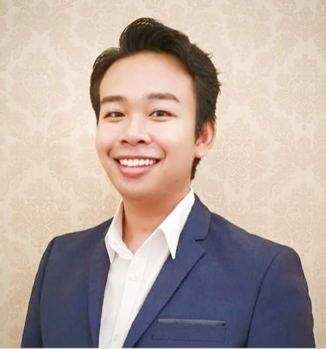

Supakrit Thiangtham
Analyst on Renewable Energy Business

Phone: (+66) 93 326 3465 (Whatsapp)
LinkedIn: https://www.linkedin.com/in/supakrit-th/
Email: supakritsut21@gmail.com
SUMMARY
Bachelor's Degree in Engineering and over 5 years of experience in project management, engineering design, and green energy business development. During my 3-year tenure as a Piping Design Engineer, I successfully ensured compliance with client requirements and received positive feedback from client. As a Renewable Energy Business Analyst for 2.5 years, I supported the development of green energy projects, demonstrating my passion for carbon reduction and net-zero emissions. I am eager to bring my diverse skill set, expertise, and enthusiasm to any global team and contribute to the development of sustainable solutions for a better future.
SKILL
- Market research and analysis (Renewable Energy)
- Strategic planning and implementation
- Financial modeling and analysis
- Project management and monitoring
- Technical expertise and knowledge in engineering design and construction
- Good Command of Thai and English language
WORK EXPERIENCE
Analyst on Renewable Business, TTCL Public Company Limited, January 2021 - Current
- Conducted market research on Torrefied Pellet and Green Ammonia/Hydrogen businesses, Sustainable Aviation Fuel (SAF) benchmarked against industry practices in the Thailand, regional (APAC) and international and identified their potential opportunities and threats in setting up the businesses, which include analyzing offtaker requirements, government policies, source of funds, available government subsidy, competitors, feedstock supply, certification, potential investors and market trends
- Monitored internal and external factors affecting the development of the new businesses and proposed strategies according to newly available solutions to achieve better business outcomes. Obtained approval from my supervisor on my proposals to integrate with off-grid renewable energy system and adoption of AI & machine learning farm management tool in replacement of current traditional feedstock suppliers to improve business efficiency, sustainability and competitiveness
- Assisted the Business Development and Technical Teams in preparing project Pre-Feasibility/Feasibility reports, Project Investment Memorandums (PIM) Document and Generated financial projections (financial model), and other key metrics such as internal rate of return (IRR) to determine the feasibility of Torrefied Pellet’s business and Green Ammonia/Hydrogen business development
- Collaborated with internal stakeholders, including Energy Business Development and Technical Teams, to track the progress of Torrefied pellet and green hydrogen projects, provided regular updates to the CEO and management on project status, timelines, financial projections, and various performance metrics
- Coordinated with external stakeholders to demonstrate the potential of the new business to potential investors and highlight synergies with their business and contributed to expanding the reach and impact of the new green energy business
- Conducted site visits and surveys to assess the feedstock supply in the northern part of Thailand for a biomass project, collaborating with local stakeholders including farmers, local traders, and agricultural cooperatives to build the relationship and develop an efficient and sustainable feedstock supply system
Piping Design Engineer, TTCL Public Company Limited, October 2017 - December 2020
- Prepared MTO and cost estimation in proposal stage for bidding for chemical plant, petrochemical
plant and power plant
- Analyzed Piping Instrumentation Diagram information to formulate piping project timelines,
milestones and deliverables
- Created Engineering Design Document such as 2D and 3D piping system designs using AutoCAD
Program, PDMS Program and SmartPlant Program and translated the 3D designs into Plot Plan,
Isometric Drawing, Pipe Support and Piping information
- Briefed clients with up-to-date 3D model designs upon completion of each milestone to ensure
client’s specification and any additional needs from the client are met throughout the project
- Surveyed existing plants and generated detailed re
ports illustrating operational facilities of existing
plants and tie-in point work required for better compatibility of the operations between the existing
plants and the new plant
- Resolved all spontaneous events arisen on construction sites while minimized their consequences
and impacts and achieved no delay in piping project timelines and received compliments from clients
for proactive working and excellent service
Maintenance Engineer, Bhutan Airlines, March-June 2017
- Prepared maintenance planning and control document for Aircraft A319
- Recorded completed maintenance activities and flight operational data
EDUCATION
Suranaree University of Technology, Thailand, June 2013 - July 2017
Bachelor of Mechanical Engineering
Major: Aeronautical Engineering
- Elected to a student exchange program in Shibaura Institute Technology in Tokyo, Japan
- Best Presenter Award in 23rd Tri-U international Joint Seminar and Symposium at Bogor Agricultural
University, Indonesia, presenting my paper entitled “Properties and Emissions Characteristics of a
Compression Ignition Engine Fueled with Biodiesel and DEE Blends”
- Other research includes “Study of Airflow Behavior of Scramjet Inlet Section with Various Number of
Ramps” by Computational Fluid Dynamics (CFD) using ANSYS program on hypersonic flow
Additional Information
- Native Proficiency in Thai Language and Full Working Proficiency in English language
- Appointed Master of Ceremonies (MC) in English language for company events and dinners
- TikTok Influencer with 56,000 followers (as of 3 April 2023)
- Freelance mental health consultant
- Volunteering experiences: distributed home-cooked food to the homeless; organized a Zumba
charity event and donated all profits to children organizations; and enlisted as a math teacher in a
secondary school in a rural area in every summer between year 2014 and year 2017
More Info
Contact